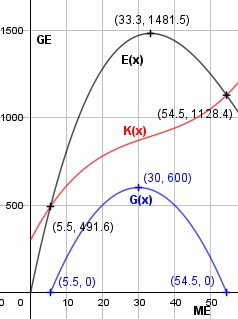

Aufgabe 97 Ein Monopolist arbeitet mit der Preisabsatzfunktion p(x) = 0,01 * (x - 100)2 und der Kostenfunktion K(x) = 0,01x3 - x2 + 40x + 300. a) Wie hoch sind der maximale Preis und die Sättigungsmenge S? b) Berechnen Sie die Gewinnzone? c) Bei welcher Menge entsteht der maximale Gewinn? a) p(x) = 0,01 * (x2 - 200x + 10 000) p(x) = 0,01x2 - 2x + 100 Höchstpreis bei x = 0: p(0) = 100 GE/ME Sättigungsmenge bei p(x) = 0: 0,01x2 - 2x + 100 = 0 | :(0,01) x2 - 200x + 10 000 = 0 p, q - Formel: p = -200, q = 10 000 x1,2 = x1,2 = 100 ± x1,2 = 100 ± x1,2 = 100 ME b) E(x) = p(x) * x E(x) = (0,01x2 - 2x + 100) * x E(x) = 0,01x3 - 2x2 + 100x G(x) = 0,01x3 - 2x2 + 100x - - (0,01x3 - x2 + 40x + 300) G(x) = - x2 + 60x - 300 G'(x) = -2x + 60 G''(x) = - 2 < 0 --> Hochpunkt -x2 + 60x - 300 = 0 |:(-1) x2 - 60x + 300 = 0 p, q - Formel: p = -60, q = 300 x1,2 = x1,2 = 30 ± x1,2 = 30 ± x1,2 = 30 ± 24,5 x1 = 54,5 ME, x2 = 5,5 ME Die Gewinnzone liegt zwischen der Gewinnschwelle bei 5,5 ME und der Gewinngrenze bei 54,5 ME. c) -2x + 60 = 0 | +2x 2x = 60 | :2 x = 30 ME G(30) = -302 + 60 * 30 - 300 = 600 GE Bei einer Absatzmenge von 30 ME liegt der maximale Gewinn bei 600 GE.
